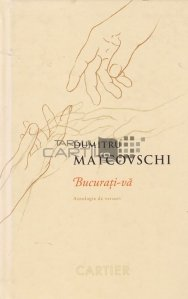
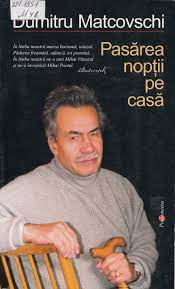
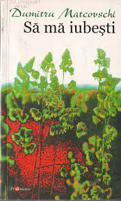

DUMITRU MATCOVSCHI
Date biografice
Publicatii
Dumitru Matcovschi s-a nascut la 20 octombrie 1939 in Vadul-Rascov si a decedat pe data de 26 iunie 2013, Chisinau. A fost un poet, prozator, acamedician, publicist ;i dramaturg din Republica Moldova, membru titular al Academiei de Stiinte s Moldovei. Reprezinta un simbol al miscarii de renastere nationala din Basarabia. Cel de-al doilea copil al taranilor instariti Leonte si Eudochia. Dupa studiile primare si secundare, in anul 1956, Dumitru Matcovschi devine student la Institutul Pedagogic „Ion Creanga” din Chisinau, facultatea „Istorie si Filologie”. Ultimul an de studiu (1960-1961) il face la Facultatea de Filologie a Universitatii de Stat din Chisinau din cauza fuzionarii acestor doua institutii universitare. Si-a inceput activitatea in calitate de redactor in 1963 la ziarul „Moldova socialista”; tot atunci apare prima sa placheta de versuri, "Macii in roua". In anul 1964 devine membru PCUS. In anii 1966–1970 a fost redactor-sef adjunct la saptamanalul „Cultura”, functie pe care este fortat s-o paraseasca din motive ideologice. In 1969 apare volumul de versuri "Descantece" de alb si negru, care imediat dupa aparitie este interzis de cenzura sovietica, fiind considerat subversiv. Cartea, in varianta initiala, nu a mai vazut lumina tiparului. Intre 1987-1988 este redactor-sef al revistei „Nistru”. In aceasta calitate, publica articolul Vesmantul fiintei noastre de Valentin Mandacanu, cu care a contribuit la renasterea nationala a Moldovei.

Opere
- Volume de poezii:
- Melodica
- Graul
- Axa
- Patria, poetul si balada
- Tu, dragostea mea
- Soarele cel mare
- Imne si blesteme
- Vad
- Crucea
- Vesnica toamna
- Pasarea noptii pe casa
- Cu limba noastra
- Proza
- Duda
- Batuta
- Toamna porumbeilor albi
- Focul din vatra
- Teatru